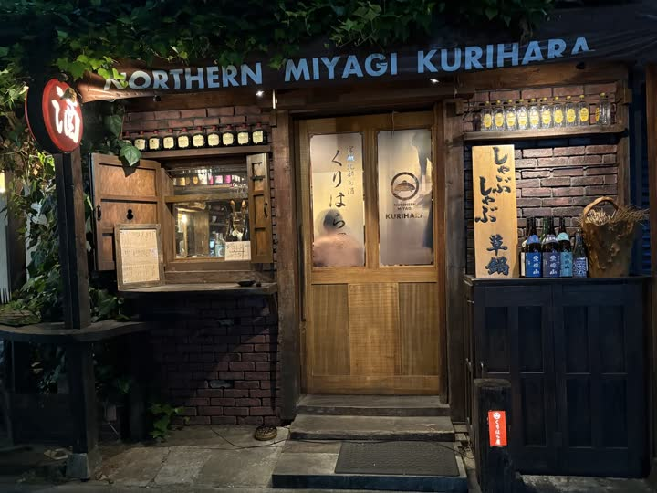

¥500銅マグハイボール
¥500銅マグハイボール冷凍庫でキンキンに冷やした銅マグに角瓶とソーダ。最後の一口まで冷たい。／バーカドヤ
 宮城草鍋
宮城草鍋宮城の青菜をどっさり。出汁でしゃぶしゃぶして、豚肉を追加。はしご酒の〆にも。／くりはら屋
ピリ辛でクリーミー。飲んだあとの一杯は格別。あっさり派はせいろを。／角ヤ 湯島天神
 ¥700カドヤの煮込
¥700カドヤの煮込じっくり煮込んだ看板の一品。KADOYAの焼印入りパン添え。／バーカドヤ
 一本一本ずつ焼く焼鳥
一本一本ずつ焼く焼鳥塩・たれ・おまかせ。宮城の地酒「栗駒山」「萩の鶴」「綿屋」と。／くりはら屋
 ¥900昭和のナポリタン
¥900昭和のナポリタンケチャップで炒めた太麺。喫茶店のあの味で〆る人、多数。／バーカドヤ
銅マグは冷凍庫で、ソーダは強炭酸で。当たり前の一杯に手を抜かない。
宮城県北部・栗原の農家から直送の米と野菜。季節の青菜は草鍋に。
仕事帰りの一軒目にも、はしご酒の〆にも。湯島の夜に灯りを消さない。




※お知らせの内容はレイアウト確認用の例です。
| 商号 | 株式会社けいか堂飲料店 |
|---|---|
| 所在地 | 〒113-0034 東京都文京区湯島3-45-3 |
| 事業 | 飲食店の経営（バー・居酒屋・蕎麦酒場） |
| お店 | バーカドヤ 03-3831-4775 くりはら屋 03-3831-5256 角ヤ 湯島天神 03-3831-8018 角ヤ 春日テラス 03-3834-4270 |
| 定休 | 全店 日曜日 |